1984–1987
Suzuki GS400

By 1984 my training was finally over and I was ready to find out where the Army was going to send me.
We had all been asked to fill in forms listing our preferred postings. I can't remember exactly which ones I chose, but I do remember that every one of them was somewhere in the UK.
So naturally...
I was posted to Roberts Barracks in Osnabrück, West Germany.
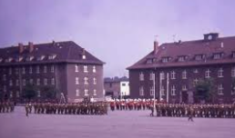
We later discovered that there seemed to be a fairly reliable Army system in operation: those who asked for UK postings went to Germany, while those who asked for Germany stayed in the UK.
Typical British Army.
The Boat Train
For my first few journeys to what we called “The Traz”, I travelled on the Boat Train.
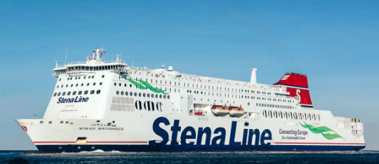
That was a journey and a half.
First came an InterCity 125 from Bridgend to London, followed by the Underground across London to Liverpool Street. From there it was an altogether less glamorous train to Harwich, then onto the ferry across the North Sea to the Hook of Holland.
Once in Holland there was another train, one of those old continental trains with separate six-seat compartments, which eventually carried me all the way to Osnabrück.
The final leg was by taxi to the barracks.
The taxi was a Mercedes, which I think may have been the first time I'd ever travelled in one.
Possibly the last too.
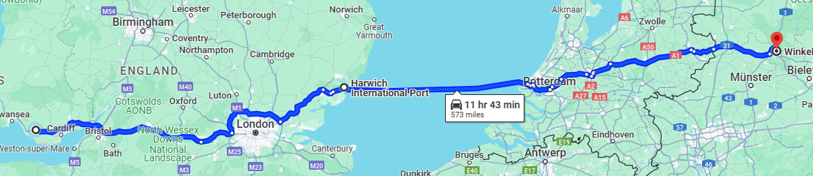
I think the complete journey took at least a full day, although my recollection of the timings is understandably vague because alcohol was available on most sections of the trip.
At the Dutch-German border, customs or border police would board the train wearing uniforms that looked as though they hadn't changed since the 1960s.
They'd check our passports and occasionally our bags, then get off again at the first station inside Germany. The same thing happened in reverse on the journey home.
Time for a Bigger Bike
Eventually I decided I'd had enough of the Boat Train.
The obvious solution was therefore to buy a motorcycle capable of making the entire journey between Germany and South Wales.
Dad and I went back to Two Wheel Services in Bridgend, where he offered his advice on what I should buy next.
I listened to him.
I sometimes wish I hadn't.
I came away with a brand-new red Suzuki GS400.
It even came with a couple of hundred pounds knocked off the price because somebody had managed to put a dent in the fuel tank.
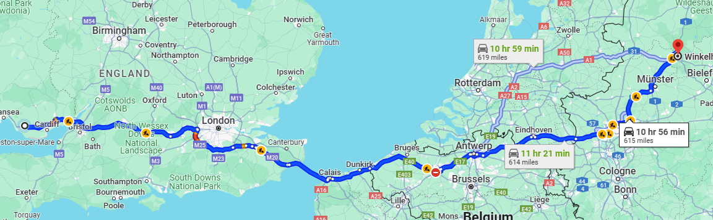
It was still a genuine step up from the SR250: two cylinders, around 44 horsepower and considerably more suitable for serious travelling.
Which was fortunate, because serious travelling was exactly what I was about to ask it to do.
Germany to Wales for the Weekend
I reckon I made the roughly 600-mile journey between Osnabrück and home at least fifteen times while I was stationed in Germany.
About 350 miles from Osnabrück to the Channel ports, then another 250 miles or so from Dover back to South Wales.
And sometimes that was just for a long weekend.
A typical long weekend involved finishing work on Thursday, jumping onto the bike and racing south towards Calais, Dunkirk or Zeebrugge.
I'd catch whichever ferry fitted the plan, cross to Dover, ride all the way back to Wales, spend three days at home — usually involving rather a lot of drinking — then repeat the whole journey in reverse.
Quite often I'd arrive back at Roberts Barracks early on Monday morning just as everybody else was getting up for a parade or morning run.
Apparently this seemed perfectly sensible when I was nineteen.
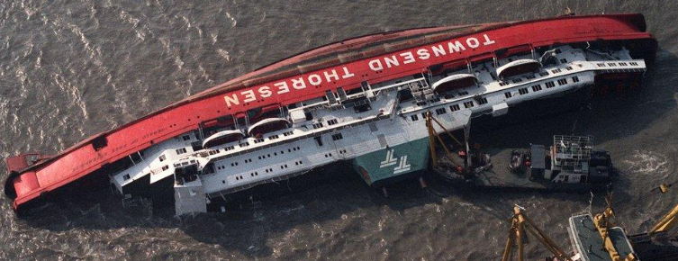
Across London and Home
Once back in Britain I'd negotiate my way around London's South Circular.
Coming from the Welsh valleys, London was an eye-opener. I remember staring in fascination at the sheer variety of people and cultures as I rode through the southern boroughs. My world growing up had been considerably less diverse.
Then it was down the A2 towards Dover and eventually westwards for home.
As more of the M25 and M2 opened, the journey gradually became quicker, although the infrastructure hadn't entirely caught up.
There weren't enough motorway services along parts of the route and the GS400 couldn't quite make it all the way to Membury Services on one tank.
So I had two choices.
I could detour towards London and call into Heston Services for fuel — and one of the excellent curries they used to serve there — or carry a spare gallon of petrol and keep going until Membury.
I usually carried the petrol.
The Membury Mast
On one particularly freezing journey home, another rider on a GSX1100 kept blasting past me.
Then at the next motorway services I'd see him again, desperately trying to warm himself up.
He'd recover, tear past me once more and the whole process would repeat itself.
Eventually I pulled into Leigh Delamere and found him lying on the ground with his motorcycle on top of him.
Apparently he'd stopped normally but his legs were so cold and stiff that he couldn't straighten them quickly enough to hold the bike upright.
I understood the problem.
On those rides I used to let out an involuntary whoop of excitement whenever the radio mast at Membury finally appeared in the distance.
It meant warmth, fuel and, most importantly, a chance to get off the bike and straighten my legs.
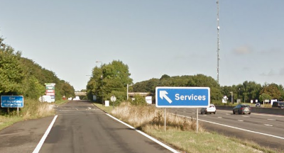
The Fault That Nobody Could Find
The GS400 did have one particularly irritating problem.
Every so often I'd be riding along quite happily when it would suddenly lose power and start spluttering.
I'd limp along for a while and then, just as mysteriously as it had appeared, the problem would disappear.
I tried taking it to a Suzuki workshop in Osnabrück.
Trying to explain an intermittent electrical fault to a German-speaking motorcycle mechanic using only English was never going to be straightforward.
I failed miserably.
So I did what any sensible young motorcyclist would do.
I ignored it and continued riding hundreds of miles across Europe.
Life at “The Traz”
I had some very good times in Germany, although I'll admit that I also had a “days to do” chart counting down from somewhere around 300 days until my discharge.
When I first arrived, much of the barrack block was almost empty because the squadron was away somewhere. The rear party seemed to consist mainly of people who were either ill, unavailable for deployment or particularly enthusiastic drinkers.
Into this environment arrived Danny “Bear” Dawkins-Smith and me.
We were immediately dragged to the NAAFI and introduced to something called Rusty Nails, which I remember as involving rum and Coke, although after several of them the exact ingredients became largely irrelevant.
The evening continued until severe drunkenness took over.
Sadly, Danny passed away in 2022, not long after we'd met again for the 40th anniversary reunion at Chepstow.
Vince
It was at The Traz that I met the man who would become one of my closest friends: Vince.
We eventually became roommates, biking buddies and great friends. Years later he would be best man at my wedding.
Other roommates included Johnny Priestman from Hull and Tommy from Kendal.
Tommy's mother once sent me a Kendal Mint Cake because apparently she thought I looked undernourished.
Vince, as it turned out, also enjoyed a drink.
So inevitably we'd find ourselves in some bar somewhere drinking German lager or whatever local concoction seemed like a good idea at the time, then stagger back to barracks in the early hours.
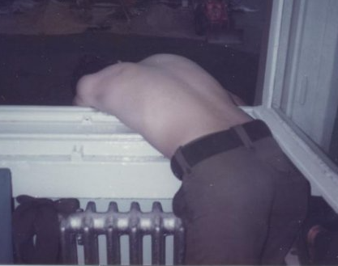
The Post Office Corps sorting office was directly below us.
Unfortunately, anything leaving Vince's window tended to trickle down their windows below.
Because Vince's bed was next to the window, he naturally got the blame.
Being a loyal friend, I let him.
Army Life: Hurry Up and Wait
One thing Army life teaches you is that boredom and repetition can exist on an industrial scale.
A typical cycle might begin with an Active Edge exercise.
We'd be dragged out of bed at stupid o'clock in the morning, empty the stores into APCs and trucks, drive out somewhere and live in a field for a while.
Eventually we'd return to barracks and unload everything back into the stores.
The following day we'd take it all back out again so it could be cleaned.
Then we'd put it away.
A day or two later we'd empty the stores again to paint and clean the shelves and floors.
Then we'd put everything back.
Someone would then decide an inventory was required.
So we'd take everything out again, count it and put it all back.
A few weeks later we'd be dragged out of bed at stupid o'clock and start the whole process again.
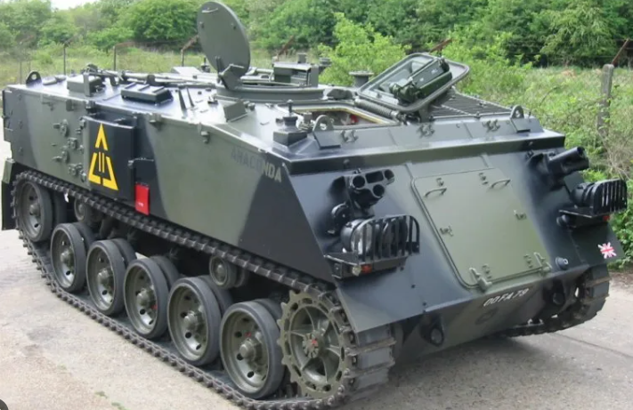
Exercise Lionheart
We also took part in Exercise Lionheart, which was described as the largest British military exercise since the Second World War.
I think we were away for three or perhaps four weeks.
We dug trenches.
We built bridges.
Sometimes we'd finish building a bridge only for an officer to decide it needed to be moved a few feet.
Yes, that really happened.
We laid and marked training minefields, played at being the enemy, ate from ration packs, cleaned our rifles, slept whenever an opportunity presented itself and were regularly woken just before dawn in case somebody decided to attack us.
And we dug more trenches.
Lots of trenches.
Johnny and I were once tasked with guarding what we'd been told was a nuclear demolition charge positioned on a bridge.
We camped under the bridge for several days and eventually ran out of food.
The only thing left in my ration pack was an apple pie we'd been warned not to eat because there had apparently been cases of food poisoning linked to them.
I was starving.
I ate it.
It certainly cured my constipation.
About two weeks into the exercise somebody finally introduced mobile showers.
My understanding was that they were compulsory for NCOs but optional for the rest of us.
So naturally I didn't bother.
Northern Ireland
After Lionheart came something very different: a four-and-a-half-month posting to Omagh in Northern Ireland.
There was a lot of preparation beforehand and, for the first time in a while, the training felt as though it had a very clear purpose.
I became part of a four-man search team.
Our job involved searching areas and buildings for weapons, explosives, tripwires and other devices.
Some tasks were considerably less pleasant than others.
One of the worst was searching an area after an explosive device had detonated, checking for secondary devices intended to injure the police, medics or soldiers arriving to deal with the aftermath.
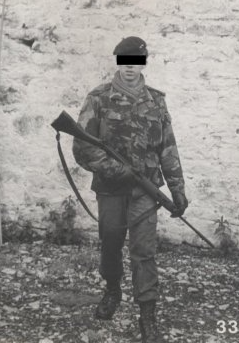
Despite all that danger, I suffered perhaps my most horrific injury in Northern Ireland during an entirely different operation.
Our little group had been in the NAAFI for most of the day and decided it would be a good idea to visit the “safe” pub in Omagh.
Our chosen transport was an abandoned shopping trolley.
To cut a long story short, I lost control at the bottom of a hill, spun out and badly damaged my big toenail.
It stayed black for years.
I should probably have claimed compensation.
I'm sure somebody would now.
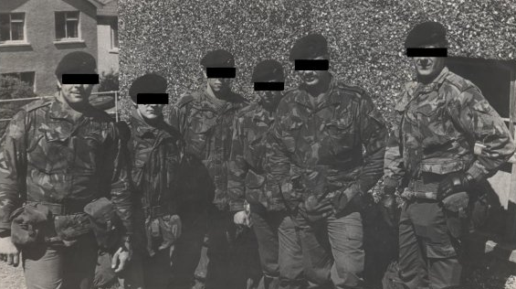
Back to Germany
Not long after returning to Germany I somehow ended up working behind the bar in the Officers' Mess.
I can't remember exactly how that came about, but it wasn't a bad job.
More importantly, it got me out of normal Army duties for a while.
Leaving the Army
Eventually my Army career came to an end.
I loaded most of my worldly possessions onto the GS400 and headed home.
It's astonishing how much luggage can be secured to a motorcycle with a couple of bungee cords and enough string.
The Suzuki survived one final long journey back to Wales.
I think I kept it for another year or so after leaving the Army, although I can't remember exactly when it went.
What I do know is that eventually it was replaced by another Two Wheel Services purchase: a Suzuki GS550L.
Back to Civilian Life
The job market in the mid-1980s wasn't particularly welcoming, especially for somebody whose recent CV included running long distances carrying heavy objects, building temporary bridges, laying minefields and producing a respectable grouping with an SLR rifle after consuming several pints of German lager the previous evening.
Strangely, there weren't many vacancies requiring that exact skillset.
So for a couple of months I worked at the local BP petrol station.
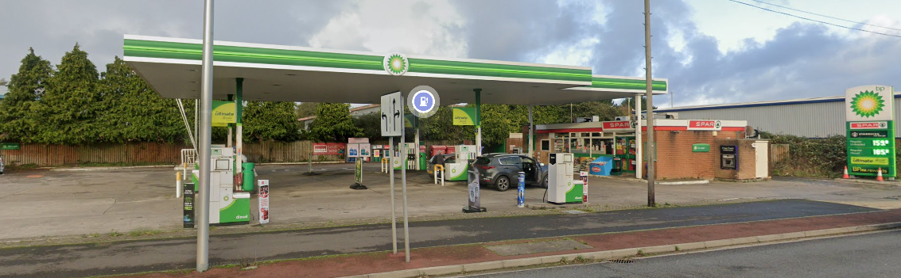
I earned £15 per shift, three shifts each week, with the useful bonus that I could fill the bike whenever I needed to.
I couldn't earn much more without affecting the benefits I was receiving at the time.
That was the first and only period in my life when I've claimed benefits.
CBSL
Eventually I managed to get a job as an electrician with CBSL, a computer reseller and bureau company based in Cardiff.
I wasn't actually their first choice.
I was initially turned down.
Apparently the person they employed instead couldn't run great distances carrying heavy loads, build bridges, lay minefields or shoot accurately with an SLR after drinking several pints of Germany's finest the night before.
Who'd have thought those skills would finally pay off?
He didn't last and they came back to me.
I loved that job.
I travelled all over Britain with my old boss, Brian Phipps.
It turned out Brian enjoyed a drink or two as well.
Fortunately Vince had prepared me well.
We spent plenty of evenings in hotels making determined efforts to reduce the bar's alcohol stock.
Brian also enjoyed his food and had an impressive ability to find decent little hotels.
Sometimes the drinks could conveniently find their way onto the food bill. On other occasions we'd be booked into rooms without en-suite facilities but charged at the en-suite rate, with the difference somehow finding its way towards the bar.
Different times.
Into Computers — Sort Of
Despite being employed as an electrician, much of my actual work involved installing computer cabling.
Initially it was 15-core serial cable, specially manufactured with the CBSL name and telephone number printed along its length:
0222 837410
We were pioneers.
Or at least that's what I tell myself.
I must have soldered millions of joints during those first few years.
Technology moved on from 15-core cable to eight-core cable — still soldered — then coaxial cable and eventually twisted-pair networking.
Companies were bought, sold and merged around us.
When the cabling work began to dry up I moved to Radius Computer Maintenance, where Rick Palmer became my manager and I gradually turned into a general-purpose “do anything” engineer.
I repaired printers, changed disks and computer components, continued doing cabling work and looked after maintenance around the Radius offices.
After Rick I briefly had another manager.
He didn't last very long after an unfortunate incident involving the receptionist at the Darlaston office.
I'll leave that story there.
Practice Net and Beyond
Around 2001 I was transferred back to CBSL, by then called Practice Net, following a management buyout.
Dale, Bob and Jean became the company bosses.
Over the years the staff numbers gradually fell from the company's heyday of around a hundred people until eventually there were only a handful left.
Dale, Bob and Jean ultimately retired and handed the company over to Phil and Paul.
By then I'd already moved on to CGI — but that's a story for much later.
Altogether I spent around 27 years with CBSL, Radius and Practice Net.
Even years after leaving, I still occasionally found myself doing an installation for them.
Oh Yes... The Bike
I've just realised that this page is supposed to be about the Suzuki GS400.
That's rather typical of this website.
The bikes provide the timeline and then the memories wander off wherever they please.
I don't remember a huge amount more about the GS400 itself.
I do remember “racing” it down the Gower with John Whiting on the back, two-up and both of us leaning into the bends as though we were competing at the Isle of Man TT.
Whether either knee actually touched the ground is something memory has probably improved over the years.
What the GS400 really represented was a period when the world suddenly became much bigger.
It took me between Germany and Wales, across borders and ferries, through freezing motorway journeys and back home when my Army career finally ended.
It may not have been my favourite motorcycle, but it was probably the first one that became genuine long-distance transport rather than simply a way of getting around.
And eventually, as always, I wanted something bigger.